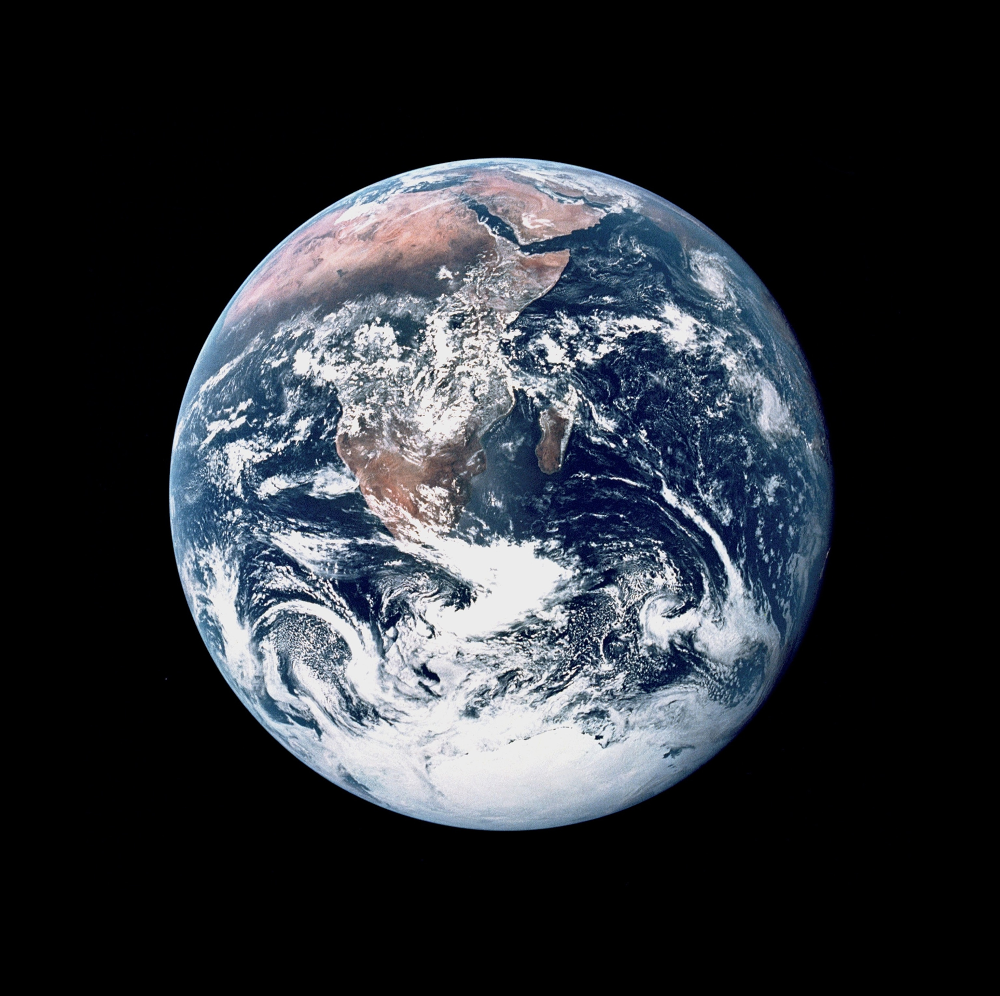
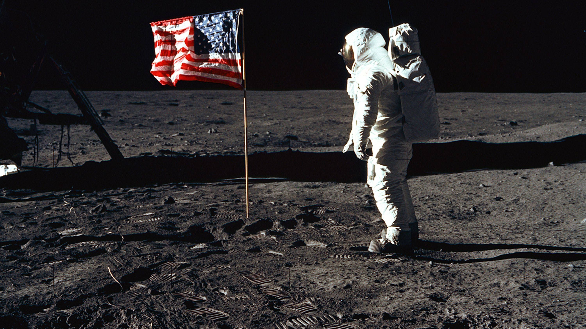
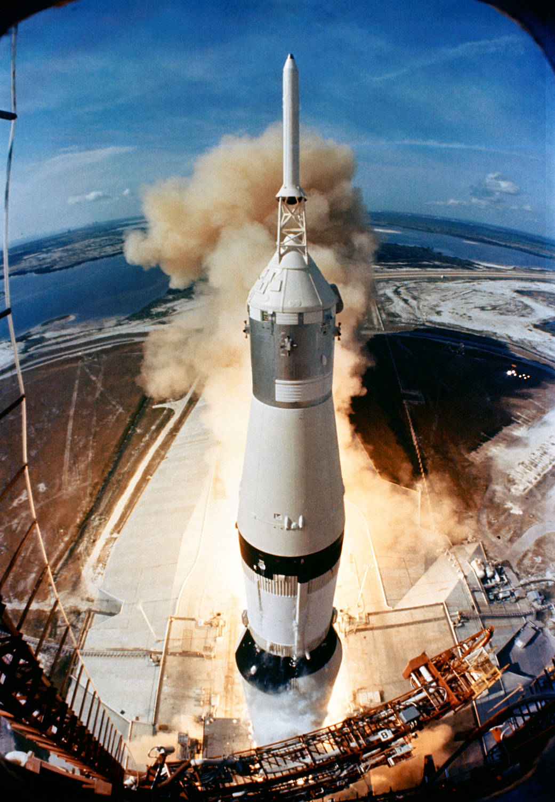
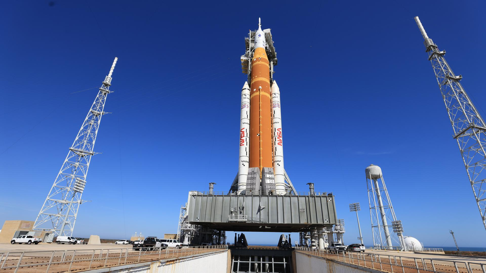
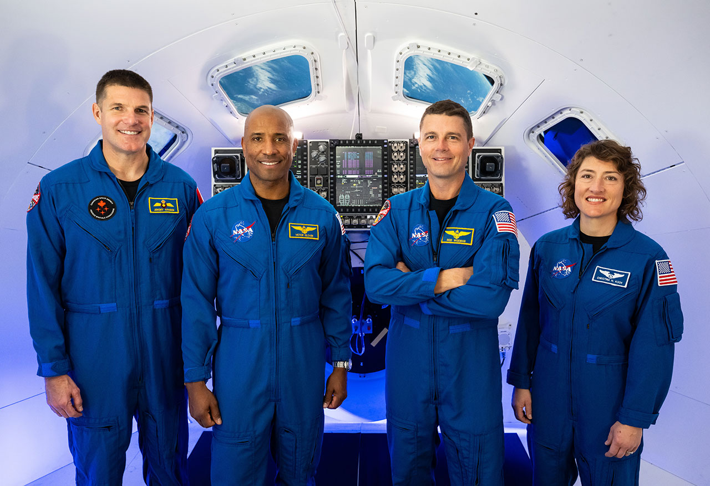

Mais de seis décadas de sonhos, conquistas e novas fronteiras na exploração da Lua — da corrida espacial da Guerra Fria ao retorno sustentável do século XXI.

A Lua representa muito mais do que um satélite natural. Ela é um laboratório científico, um arquivo geológico de 4,5 bilhões de anos e, agora, uma potencial plataforma para a expansão humana pelo sistema solar.
Desde que Neil Armstrong pisou no solo lunar em 20 de julho de 1969, a humanidade nunca mais foi a mesma. O Programa Apollo não apenas venceu a corrida espacial — ele transformou a ciência, a tecnologia e a percepção que temos do nosso lugar no universo.
Mais de cinco décadas depois, o Programa Artemis promete um retorno ainda mais ambicioso: não apenas visitar, mas estabelecer uma presença permanente, explorar o polo sul lunar e preparar o caminho para Marte.
"Um pequeno passo para um homem, um salto gigantesco para a humanidade."
A maior façanha tecnológica da história humana, nascida da rivalidade da Guerra Fria e da visão de um presidente.
O Programa Apollo foi a resposta dos Estados Unidos ao desafio soviético na corrida espacial. Em 25 de maio de 1961, o presidente John F. Kennedy lançou o desafio histórico: enviar homens à Lua antes do fim da década.
Com um orçamento equivalente a US$ 165 bilhões em valores atuais, o programa mobilizou mais de 400.000 engenheiros, cientistas e técnicos. O resultado foi uma série de missões que culminaram no primeiro pouso lunar em 20 de julho de 1969.
Entre 1969 e 1972, seis missões Apollo pousaram na Lua, levando 12 astronautas à superfície lunar. A Apollo 13, em 1970, tornou-se famosa por seu dramático retorno após uma explosão a bordo.


Incêndio na cabine durante teste em solo matou os astronautas Gus Grissom, Ed White e Roger Chaffee. A tragédia levou a uma revisão completa de segurança do programa.
Walter Schirra, Donn Eisele e Walter Cunningham realizaram o primeiro voo tripulado do programa, testando o módulo de comando em órbita terrestre por 11 dias.
Frank Borman, James Lovell e William Anders foram os primeiros humanos a orbitar a Lua. A icônica foto "Earthrise" foi tirada nesta missão na véspera do Natal de 1968.
Neil Armstrong e Buzz Aldrin pousaram no Mar da Tranquilidade em 20 de julho de 1969. Armstrong foi o primeiro humano a pisar na Lua. Michael Collins orbitou acima.
Uma explosão no tanque de oxigênio impediu o pouso lunar. James Lovell, Fred Haise e Jack Swigert retornaram à Terra em um feito de engenharia e coragem sem precedentes.
Eugene Cernan, Ronald Evans e Harrison Schmitt realizaram a última missão lunar. Cernan foi o último humano a pisar na Lua. A missão durou 12 dias e coletou 111 kg de amostras.
O retorno à Lua com novos objetivos: ciência, sustentabilidade, diversidade e o caminho para Marte.


Autorizado em 2017 pela Space Policy Directive 1, o Programa Artemis representa uma nova era da exploração lunar. Diferente do Apollo, é uma iniciativa global que envolve agências espaciais de 43 países signatários dos Acordos Artemis.
O programa tem objetivos muito mais amplos: não apenas pousar humanos na Lua, mas estabelecer uma presença sustentável, explorar o polo sul lunar (onde há gelo de água), construir a estação espacial Gateway em órbita lunar e preparar missões para Marte.
Em novembro de 2022, a Artemis I realizou um voo não tripulado bem-sucedido ao redor da Lua. A Artemis II, com quatro astronautas (incluindo a primeira mulher e o primeiro canadense em uma missão lunar), está prevista para 2026.
Primeiro voo do foguete SLS e da cápsula Orion ao redor da Lua sem tripulação. A missão durou 25 dias e testou todos os sistemas críticos com sucesso. Orion viajou 450.000 km da Terra.
Quatro astronautas — Reid Wiseman, Victor Glover, Christina Koch e Jeremy Hansen — farão um sobrevoo da Lua em missão de 10 dias. Será o primeiro humano a orbitar a Lua em mais de 50 anos.
Primeira missão a pousar no polo sul da Lua. Incluirá a primeira mulher e a primeira pessoa negra a pisar na Lua. Usará o módulo lunar Starship da SpaceX para o pouso.
Primeira missão a atracar na estação espacial Gateway em órbita lunar. Iniciará a construção da infraestrutura permanente que servirá de base para futuras missões de longa duração.
Dois programas, uma mesma Lua — mas com objetivos, tecnologias e contextos radicalmente diferentes.
A pergunta que alimenta conspirações tem respostas baseadas na realidade política, econômica e tecnológica.
Após vencer a URSS na corrida à Lua, o interesse político dos EUA diminuiu drasticamente. O orçamento da NASA, que chegou a 4,4% do orçamento federal em 1966, caiu para menos de 0,5% nas décadas seguintes.
Nas décadas de 70 a 2000, a NASA priorizou o Ônibus Espacial (Space Shuttle) e a Estação Espacial Internacional (ISS). O objetivo era aprender a viver e trabalhar no espaço, não viajar para outros mundos.
As fábricas que construíam o Saturno V foram fechadas, os engenheiros se aposentaram e as plantas originais tornaram-se obsoletas. Não era possível "apenas refazer" o Apollo; era necessário reinventar tudo com tecnologia moderna.
Programas espaciais levam décadas, mas governos mudam a cada 4 ou 8 anos. Bush queria voltar à Lua (Constellation), Obama cancelou e focou em asteroides, Trump retomou o foco na Lua (Artemis) e Biden manteve.
Ir à Lua era extremamente caro e perigoso. Uma vez atingido o objetivo político (vencer a Guerra Fria), o risco e o custo não se justificavam mais para a época. É como uma expedição ao Everest: você não fica lá para sempre só porque provou que consegue subir.
Não. A bandeira tinha uma haste horizontal para mantê-la aberta. O "tremular" visto nos vídeos é a inércia do movimento após o astronauta soltá-la, que dura mais no vácuo lunar por não haver resistência do ar.
Física básica de fotografia: a superfície da Lua está sob sol forte e é muito reflexiva. Para fotografar os astronautas claros, o tempo de exposição da câmera deve ser curto, o que torna as estrelas (muito fracas) invisíveis na foto.
Astronautas da Apollo deixaram refletores laser na Lua. Até hoje, observatórios na Terra disparam lasers que batem nesses espelhos e voltam, permitindo medir a distância da Lua com precisão de milímetros.
De Sputnik ao retorno à Lua — os marcos que definiram a história espacial da humanidade.
JFK desafia os EUA a enviar um homem à Lua antes do fim da década.
Neil Armstrong e Buzz Aldrin dão o primeiro passo humano na Lua.
50 anos de exploração robótica e foco na órbita baixa da Terra (ISS).
Voo não tripulado bem-sucedido ao redor da Lua.
Retorno humano à superfície e construção da base permanente.
Gelo nas crateras sombreadas para combustível e oxigênio.
Estação espacial em órbita lunar como base de operações.
A Lua como trampolim para a primeira missão humana ao Planeta Vermelho.